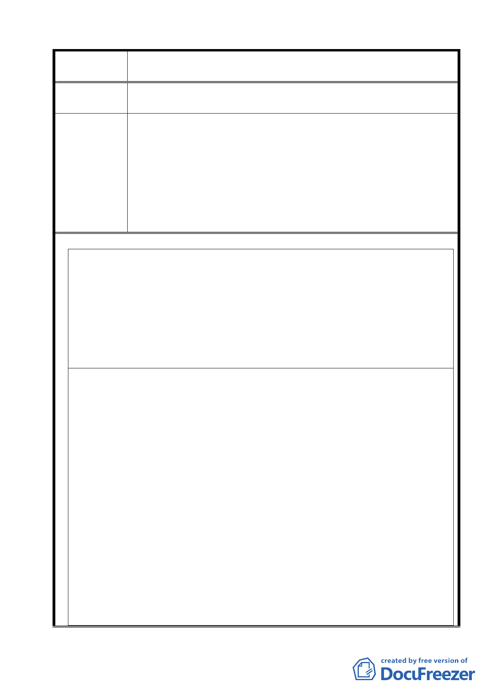

案名
委員會議
決議
變更臺北市士林區陽明山山仔后地區第二種住宅區為特定住宅區
細部計畫案
3.請依「文化資產保護法第 56 條」、「都市計畫法第 15 條第 5
款」劃定山仔后地區陽明山美軍宿舍群為「文化景觀保存區」。
1.有關本項陳情市府業說明依「陽明山美軍宿舍群文化景觀保存
計畫」，對於原美軍宿舍建築群係以「元素保存」為原則，而非
採古蹟或歷史建築「原貌保存」之方式，本案係依該文化景觀
保存計畫相關規範審慎訂定都市設計管制要點。
2.本案除市府本次會議所送修正計畫書第 2-20 頁（四）文字修正
為「建築基地地面高度設計：建築基地地面設計以維持原地形地
面為原則，但經整地後基地地面高度不得超過 1.2 公尺」外，其
餘依市府本次會議所送修正計畫書內容通過。
附件 1
何謂「公有」文化資產
行政院文化建設委員會令 中華民國 95 年 7 月 12 日文壹字第 0951102389-2 號
一、強化文化資產之保存及活用，文化資產保存法（以下稱文資法）第 8 條所稱「公有」文化資產，係指國有、地方
所有（包括直轄市、縣（市）及鄉（鎮、市）所有）以及國營事業所有之文化資產，或非上述機關（構）所有但
由其管理維護之文化資產。按文化資產保存法第 8 條公「有」之概念，應包括文化資產之「所有」與「管理」。
公有概念之界定非概以所有權歸屬為論斷，而應考慮保存文化資產之公益性質。
二、依國營事業管理法第 3 條規定：「本法所稱國營事業如左：一、政府獨資經營者。二、依事業組織特別法之規定，
由政府與人民合資經營者。三、依公司法之規定，由政府與人民合資經營，政府資本超過百分之五十者。其與外
人合資經營，訂有契約者，依其規定。」準此，國營事業得分為政府獨資經營、依事業組織特別法及依公司法之
規定而成立之三種類型。若屬於國營事業所有或管理之財產，無論事業之成立方式為何，皆屬於文化資產保存法
第 8 條「公有」之範圍。
主任委員 邱坤良
附件 2
函
地址 : 111 台北市愛富二街二號
聯絡人 : 歐漢平 林樂昕
電話: 02-28612347 0922696075
發文者 : 山仔后文史工作室 ; 台北市陽明山國家公園區環境改造協會 ; 財團法人綠色消費者基金會 ; 大龍峒文史
工作室 ; OURs 中華民國專業者都市改革組織 ; 國家資產搶救連線 ; 台北市民 楊祖珺 ; 台北市民 古秋燕 ; 滬尾田
野工作室 ; 高雄市民 成令方 ; 台中縣民吳東明 ; 桃園縣民張美齡 ; 台北市民洪致文 ; 台北市民蘇美雅 ;台北市民
劉民倫 ; 台灣蠻野心足生態協會等
受文者 : 財政部
發文日期：中華民國 96 年 5 月 7 日
發文字號：山文室字第 960020507 號
速別：普通
附件 ﹕67 筆地目與產權移轉過程,兩份美軍社區簡介
主旨：為「陽明山山仔后臺灣銀行宿舍(原美軍眷舍)— 位於愛富一街﹑二街﹑三街區 ﹑光華路區 ﹑凱旋路區 ﹑長
春街區 ﹑格致路 20 巷﹑建業路區」等建物群產權，依中華民國相關法令，以及社會正義，應屬財政部國有財產局所
有事﹐請 鈞部調查是否屬實。
說明﹕
一、依中華民國憲法，第一百四十三條：「中華民國領土內之土地屬於國民全體。人民依法取得之土地所有權，應受
法律之保障與限制。私有土地應照價納稅，政府並得照價收買。附著於土地之礦，及經濟上可供公眾利用之天然
力，屬於國家所有，不因人民取得土地所有權而受影響。土地價值非因施以勞力資本而增加者，應由國家徵收土
地增值稅，歸人民共享之。國家對於土地之分配與整理，應以扶植自耕農及自行使用土地人為原則，並規定其適
當經營之面積。」山仔后舊美軍宿舍應屬中華民國所有，歷經管理人、使用人更迭，致使各界誤以為「台灣銀行
之財產」。基於憲法一百四十三條之法意，上開土地並非台銀依法取得之土地所有權，而台銀之唯一股東為財政
部，故土地所有權自屬中華民國，而非台銀之「私有財產」或「報廢資產」。
二、依過去經驗，台銀不但未能妥善經營管理其「名下」之土地，及其所附之文化資產（包括古蹟、歷史建物、文化
27